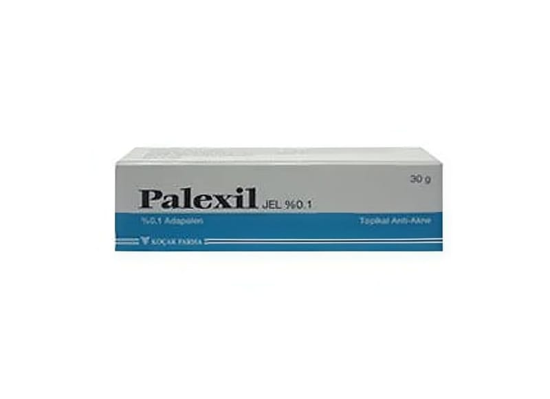

Palexil Jel %0,1 30 g

Ne için kullanılır
KT · Bölüm 1PALEXİL, 30 gramlık polietilen tüplerde sunulan beyaz opak jeldir. PALEXİL orta şiddetteki aknenin (sivilce) harici tedavisinde kullanılır.
2.PALEXİL’i kullanmadan önce dikkat edilmesi gerekenler
PALEXİL’i aşağıdaki durumlarda KULLANMAYINIZ Eğer:
Etkin madde adapalene veya PALEXİL’ in herhangi bir bileşenine alerjiniz veya aşırı duyarlılığınız var ise,
PALEXİL’i aşağıdaki durumlarda DİKKATLİ KULLANINIZ
Kullanılan miktarların artırılması, ilacınızın etkisini veya etki hızını arttırmaz ancak ciltte kızarıklığa, soyulmaya veya rahatsızlığa neden olabilir.
İlacın aktivitesinden dolayı, bu jel normalde cildi tahriş etmektedir. Bu sorunu azaltmak için birkaç önlem alınmalıdır.
İlacı kullanırken, gözlerinizle, göz kapaklarınızla, burun deliklerinizle ve ağzınızla temasından kaçınınız. Kazayla bir temas meydana gelirse, su ile iyice yıkayınız.
Hali hazırda bu tedavi öncesinde diğer lokal eksfoliatif (ciitteki ölü derinin dökülmesi için kullanılan) preparatlar ile tedavi edilmiş iseniz, bu tedaviye başlamadan önce derinizdeki tahriş geçene kadar bekleyiniz.
Güneş ışığına ve ultraviyole lambalarına maruz kalınması, ek tahrişe neden olmaktadır. Bu nedenle, tedavi süresince mümkün olduğu ölçüde maruz kalmaktan kaçınınız. Ancak, maruz kalım asgariye indirilmiş (şapka takılması, güneş kremi kullanılması) ise ve uygulamalar arasında geçen süre ayarlanmış ise, tedaviye devam edilebilir.
Güneşe olağan dışı bir maruz kalma (örneğin, plajda geçen bir gün) söz konusu ise, PALEXİL’i bir gün öncesinde, aynı gün içerisinde ve bir gün sonrasında uygulamayınız. Daha önceki maruz kalım yanıklara (güneş yanıklarına) neden olmuş ise, tedaviniz başlamadan önce bu yanıkların tamamen iyileşmesini bekleyiniz.
Ek tahrişe neden olabilecek, temizleyici astrenjan olan kozmetik ürünleri ve kurutucu veya tabriş edici ürünleri (parfümlü veya alkol içeren ürünler gibi) PALEXİL ile birlikte kullanmayınız.
Test edilmiş nonkomedojenik (siyah noktalara neden olmayan) ürünlerden seçmeniz koşuluyla arzu ettiğiniz makyaj ürünlerini veya nemlendiricileri kullanabilirsiniz (doktorunuzdan veya eczacınızdan tavsiye alınız).
Bu uyarılar geçmişteki herhangi bir dönemde dahi olsa sizin için geçerliyse lütfen doktorunuza danışınız.
PALEXİL’in yiyecek ve içecek ile kullanılması: PALEXİL’in uygulama yöntemi açısından yiyecek ve içeceklerle etkileşimi yoktur.
Hamilelik
İlacı kullanmadan önce doktorunuza veya eczacınıza danışınız.
Hamilelik boyunca PALEXİL kullanmayın. Beklenmeyen bir hamilelik durumunda, tedavinizi durdurun.
Tedaviniz sırasında hamile olduğunuzu fark ederseniz hemen doktorunuza veya eczacınıza danışınız.
Emzirme
İlacı kullanmadan önce doktorunuza veya eczacınıza danışınız.
Bebeğinizi emzirirken PALEXİL kullanabilirsiniz. Bebeğin kazara ilaçla temasını önlemek için emzirirken göğsünüze PALEXİL sürmeyin.
Araç ve makine kullanımı Bildirilmemiştir.
PALEXİL’in içeriğinde bulunan bazı yardımcı maddeler hakkında önemli bilgiler
PALEXİL’in içeriğinde bulunan,
Metil parahidroksibenzoat alerjik reaksiyonlara sebebiyet verebilir. Propilen glikol ciltte tahrişe sebep olabilir.
Diğer ilaçlar ile birlikte kullanımı PALEXİL ciltten sadece az miktarda emildiğinden diğer ilaçlarla etkileşimi olası değildir.
Eğer reçeteli ya da reçetesiz herhangi bir ilacı şu anda kullanıyorsanız veya son zamanlarda kullandınız ise lütfen doktorunuza veya eczacınıza bunlar hakkında bilgi veriniz.